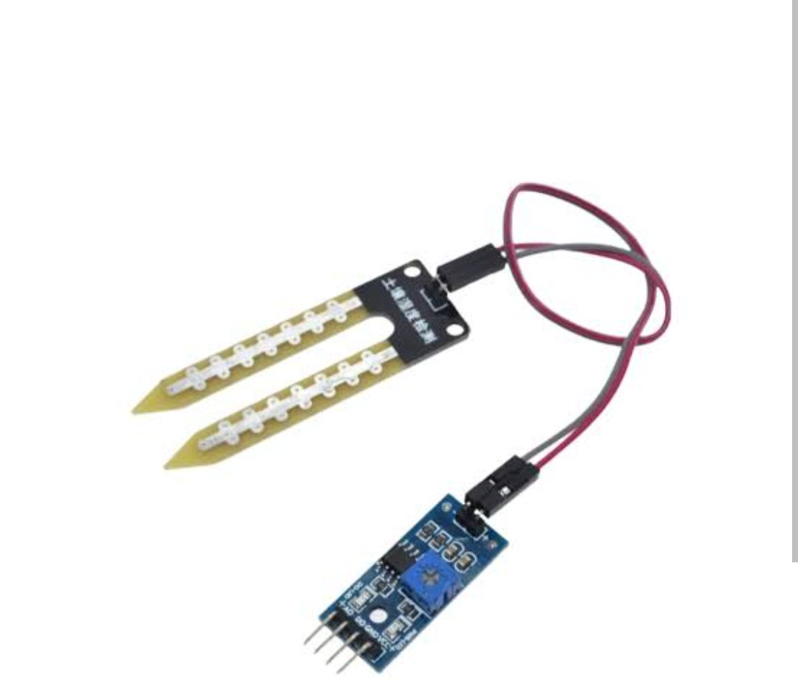
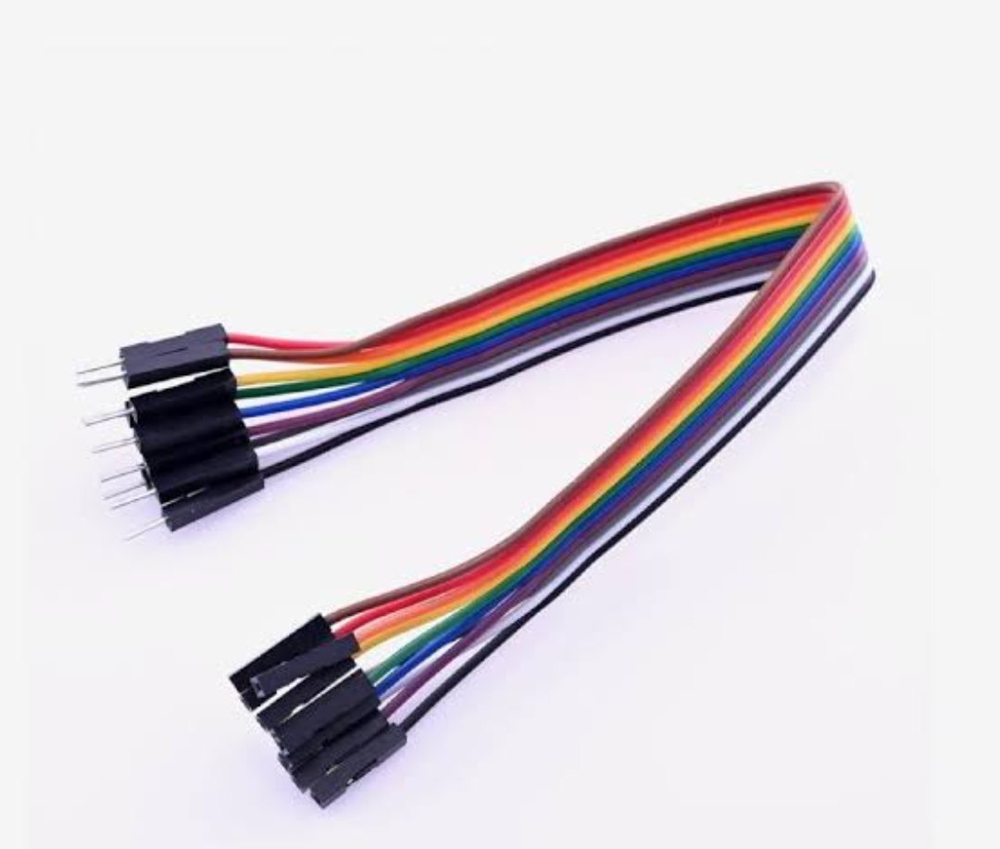
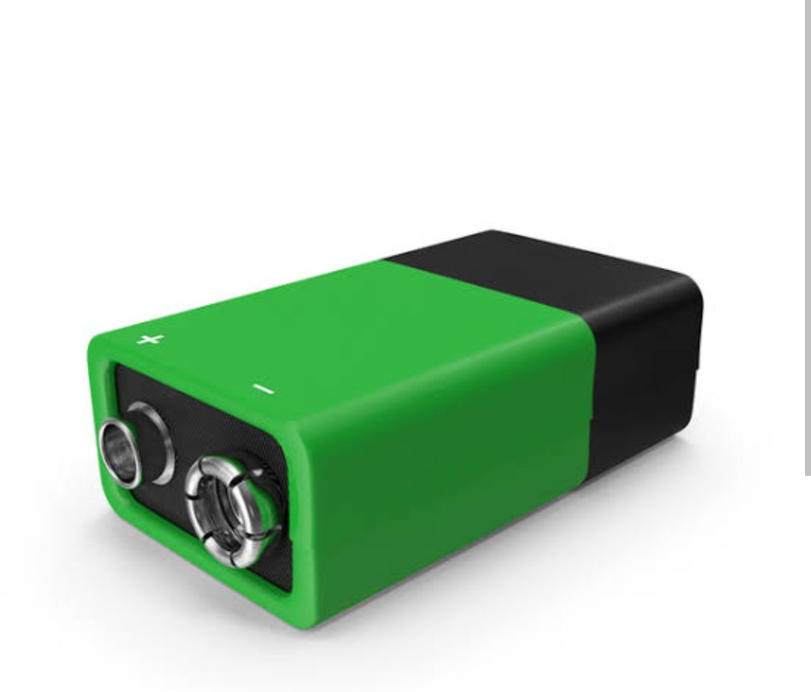
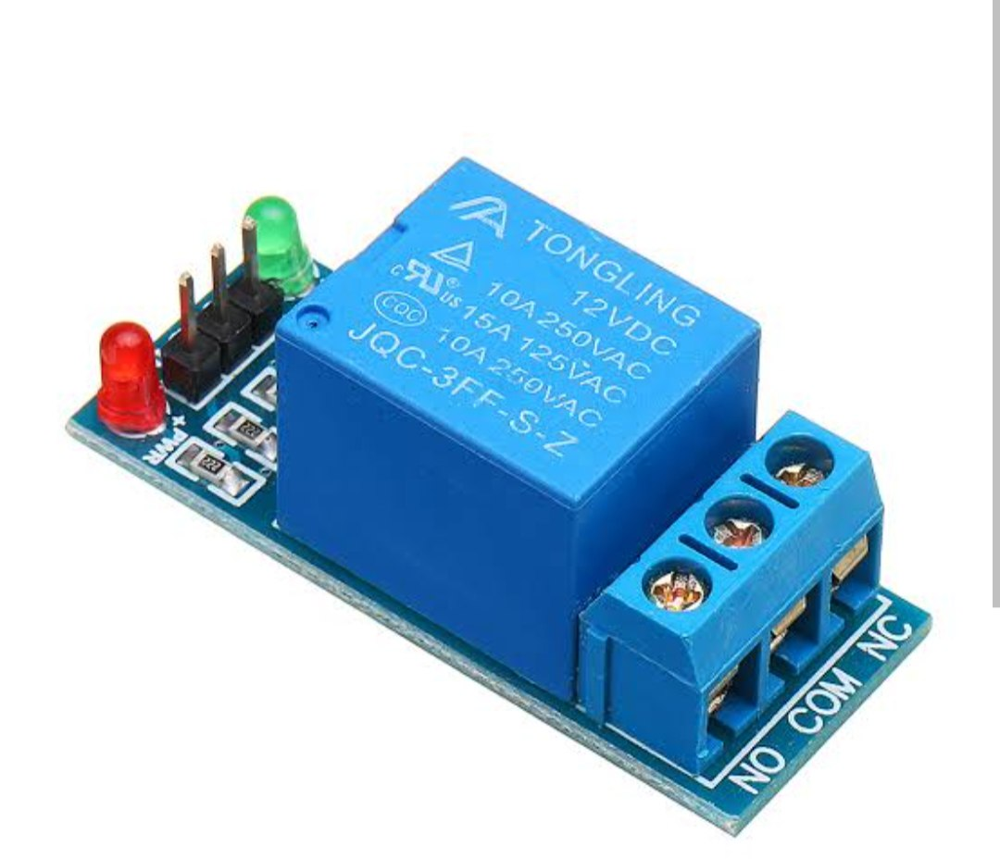
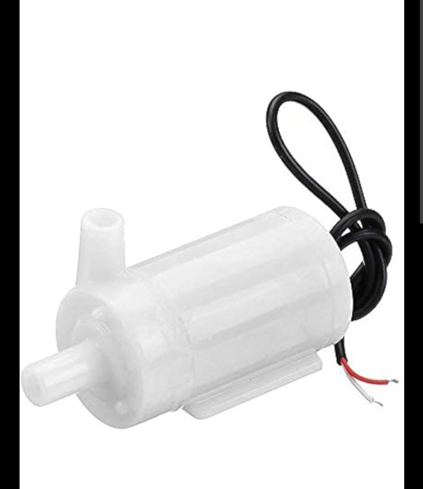

Introduction
The soil moisture sensor is an essential tool designed to measure the water content in soil accurately. By providing real-time data, it helps gardeners, farmers, and researchers ensure optimal soil conditions for plant growth. This sensor is particularly useful for automated irrigation systems, greenhouse monitoring, and various agricultural applications. With proper setup and maintenance, this device offers reliable performance and contributes to sustainable water management practices.
Components
1. Soil Moisture Sensor
Detects the moisture level in the soil by measuring electrical conductivity. The probe is inserted into the soil to gather data.
2. Connecting Wires
Used to connect the sensor, controller, and other components. These ensure stable signal transmission and power supply.
3. Power Supply
Provides a stable voltage (3.3V or 5V) required to power the entire system. It can be a battery or an adapter.
4. Relay Module
Acts as a switch to control the water pump based on the sensor readings. Ensures efficient irrigation management.
5. Water Pump
Pumps water to the soil as required. Connects to the relay module and responds automatically to soil moisture levels.
Setup Instructions
To set up the soil moisture sensor system, follow these steps:
- Insert the soil moisture sensor into the soil to the recommended depth.
- Connect the sensor to the controller board using the provided wires.
- Attach the relay module to the controller and connect the water pump to the relay.
- Provide a stable power supply (3.3V or 5V) to the controller board.
- Power on the system and ensure all components are functioning as intended.
Usage Guidelines
Follow these guidelines to ensure optimal performance:
- Insert the sensor probe carefully into the soil for accurate readings.
- Ensure the power supply is stable and sufficient for all components.
- Monitor the system periodically to prevent any malfunctions.
Maintenance Tips
- Clean the sensor probe with a damp cloth to remove soil residues.
- Store components in a dry place when not in use.
- Regularly inspect the water pump for blockages or wear.
Safety Precautions
- Avoid immersing the entire sensor or relay in water.
- Disconnect from the power supply before cleaning.
- Handle the sensor probe gently to avoid damage.
Applications
The soil moisture sensor system is suitable for:
- Automated irrigation systems.
- Greenhouse and agricultural monitoring.
- Soil research and analysis.
- Home gardening and landscaping.